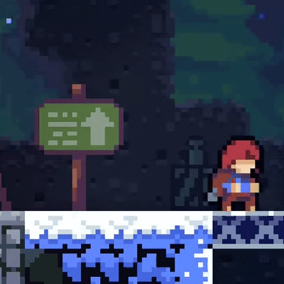
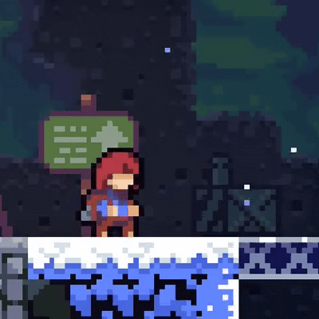

Celeste'is on kolm peamist liikumismehhanismi, millest esimene ja kõige lihtsam on tavaline liikumine. See koosneb omakorda sörkimisest ja hüppamisest. Sörkimine toimub alati horisontaalsel pinnal kas vasakule või paremale. Hüppamine toimub horisontaalselt pinnalt üles, kuid hüppe ajal saab endiselt liikuda vasakule või paremale.